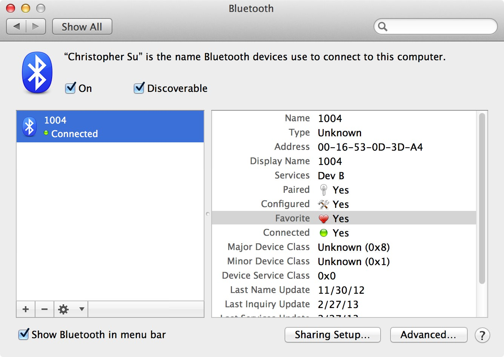
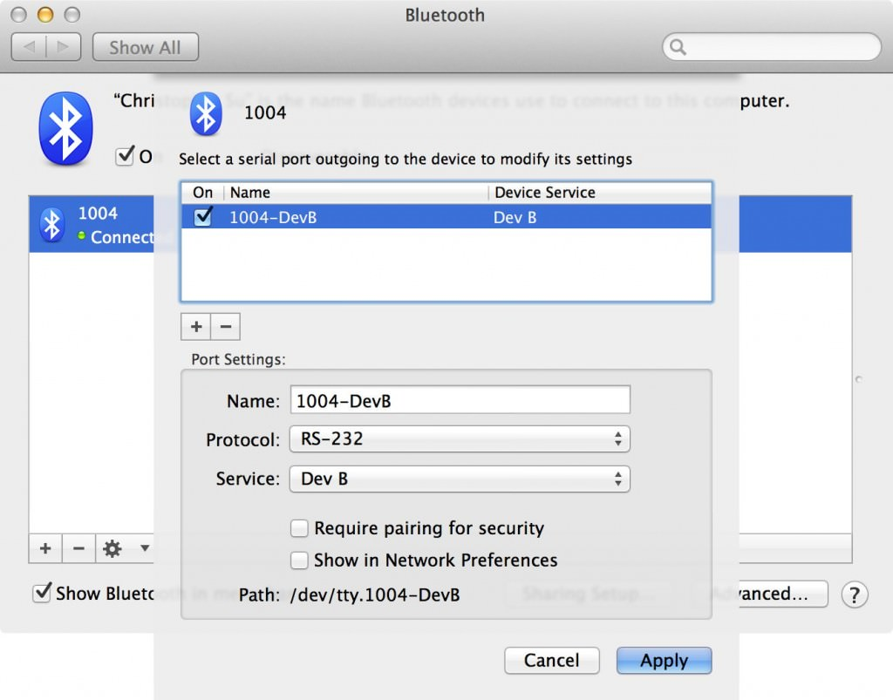
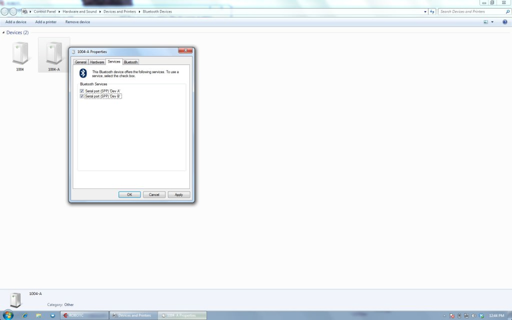

Pairing NXT Bricks through Bluetooth with RobotC in a Virtual Machine on a Mac
June 16, 2013For two FTC robotics seasons, I ran RobotC in a virtual machine on Mac OS X. One of the most frequent problems I encountered was being unable to connect to NXT bricks by bluetooth. While USB connections always worked, bluetooth pairings were far less reliable. Bricks would often disconnect or fail to establish a pairing in the first place, throwing errors like the following:
{kind=link}
Eventually, I developed this more or less foolproof method of ensuring a stable bluetooth pairing.
- Go to System Preferences in Mac OS X, go to the bluetooth section, and remove the NXT brick you want to connect to from the list of devices (if it is listed there)
- Ensure that the brick is on, bluetooth is enabled, and the brick is discoverable
- In the bluetooth area of System Preferences, click the plus sign button in the bottom righthand corner and use the wizard to add the NXT brick as a device. At this point, the window should look something like this:
- This is where it gets weird. If you look at the screenshot above, you’ll see “Dev B” listed under “Services”. This is a serial port that the computer can use to communicate with the brick. For whatever reason, the service doesn’t always show up. In order to get it to show up (in the case that it doesn’t appear automatically after the bluetooth device is added), you need to select the NXT brick in the list of devices, click the little cog icon to open the drop down menu, and then choose to edit the settings for the device. The computer should then search for services and a drop down like the following should appear:
- Check the checkboxes for any RS-232 services that appear to ensure they are on and click the “Apply” button to save the settings.
- Now go to Windows in your virtual machine and go to Control Panel > Hardware and Sound > Devices and Printers > Bluetooth Devices. The devices you added on the Mac side should appear in the window if your virtual machine’s bluetooth is setup properly. Right click on the NXT brick you would like to use, choose Properties in the menu, and go to the services tab of the resulting window. In that window, ensure that the two serial port checkboxes are checked and hit apply.
- Now go to RobotC and add the brick as you normally would. RobotC should detect and open communications with the brick successfully.
{kind=link}
{kind=link}
{kind=link}
Comments